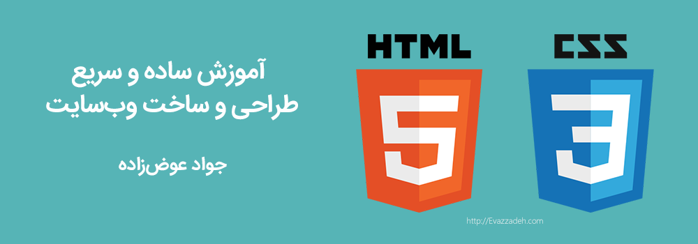

2531 روز پیش
سومین مبحث آموزش چریکتهای ارمایل، یادگیری اچتیامال و سیاساس بود که در حال حاضر با اتمام آن به صورت کامل برای استفاده و دانلود رایگان توسط شما عرضه شده است.

به طور کل در تقریبا همه زبانهای برنامه نویسی و حتی طراحی وب یک پروژه رو میشه به دو بخش frontend و backend تقسیم کرد. فرانتاند یعنی بخش جلویی و بکاند یعنی بخش پس زمینه کار. این اتفاق برای یک سایت ساده شخصی یا یک سایت خبری یا مثلا آشپزی هم میافته. شما در واقع دو بخش دارید.
در این آموزش ما قصد داریم که روش طراحی بخش جلویی کار یا frontend رو بهتون آموزش بدیم. جدا از اینکه در بخش پشتی کار چه اتفاقی داره میافته و از چه تکنولوژی استفاده میشه، در نهایت بخش جلویی کار در یک وب سایت ساده تا پیچیدهترین وب سایتها از html و css تشکیل شده است.
مطابق معمول ما تو آموزشهامون آخرین نسخه موجود رو آموزش خواهیم داد که در حال حاضر نسخه پنج اچتیامال و نسخه سه برای سیاساس هست. پس شما با دیدن و فهمیدن و درک این مجموعه آموزشی قادر خواهید بود تا ظاهر یک وب سایت رو به سادگی بسازید.
در تهیه این آموزش همانند همه آموزشهای قبلی سعی شده مطالب با سرعت بالا گفته بشه و شاید در طی این مجموعه لازم باشه به دفعات فیلم رو به عقب برگردونده و جملات و یا کدها رو مرور کنید.(البته یکی از چریکتهای ما فیلمهارو با سرعت پخش دو برابر میدید!)
همچنین شاید لازم باشه بعد از بروز مشکل در بخشی خاص یا برای حل تمرینهای ذکر شده در ویدیو به عقب برگردید و قسمتهای عقبتر رو هم چندباره ببینید و بدونید که چریکتهای ما هم با اینکه در هنگام ضبط حضور داشتن بعضی اوقات چندین بار فیلمها رو مرور کردن، پس نگران این نباشید.
این مجموعه آموزشی شامل پنچاه و هفت قسمت به مدت زمان حدود سیزده ساعت و چهل و پنج دقیقه است. حجم فایلها هم حدود یک و نیم گیگ شده است. از نظر حجم فایلها از اونجایی که کیفیت در اولویت اول ما قرار داشت، سعی شده حداقل کاهش کیفیت ممکن رو داشته باشیم و در این مجموعه کیفیت صدا هم نسبت به آموزشهای قبلی بهبود خوبی داشتیم.
برای دانلود کامل و رایگان این مجموعه به ادامه مطلب بروید.ادامه دارد »»»